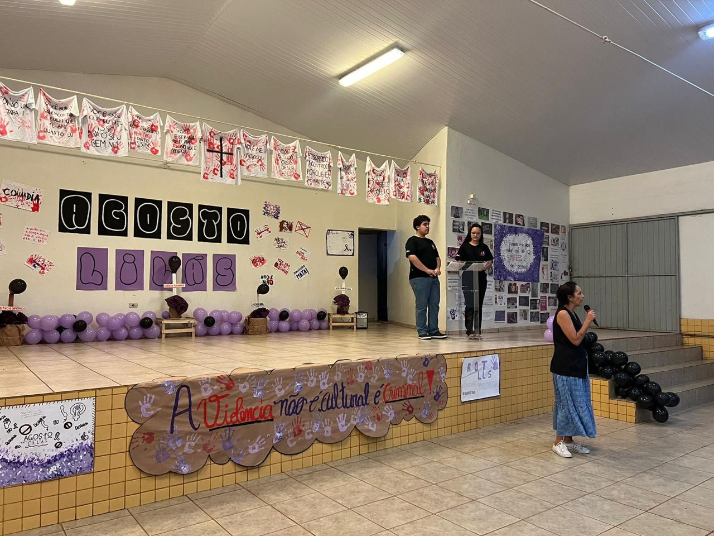

Agosto Lilás
A palestra "Agosto Lilás" no Colégio Santo Agostinho foi um momento muito enriquecedor. Os especialistas compartilharam informações valiosas sobre a prevenção do câncer de mama, destacando a importância do autoexame e da mamografia. Os alunos participaram ativamente, fazendo perguntas e interagindo com os palestrantes.

Além da parte informativa, houve um espaço para histórias inspiradoras de superação, o que ajudou a sensibilizar todos sobre a importância do tema. A iniciativa reforçou a necessidade de cuidar da saúde e promoveu um ambiente de apoio e conscientização na comunidade escolar. Se precisar de mais detalhes específicos, é só falar!
Além das informações técnicas, o evento também incluiu relatos emocionantes de superação de mulheres que enfrentaram a doença. Essas histórias inspiradoras tocaram o coração de todos, lembrando a importância do apoio emocional e da conscientização coletiva na luta contra o câncer.

No final, a palestra não apenas educou, mas também promoveu um clima de esperança e apoio, reafirmando o compromisso do Colégio Santo Agostinho com a saúde e o bem-estar de seus alunos e da comunidade. Com certeza, foi um passo importante na formação de cidadãos mais conscientes e solidários.
Voltar para a Página Inicial